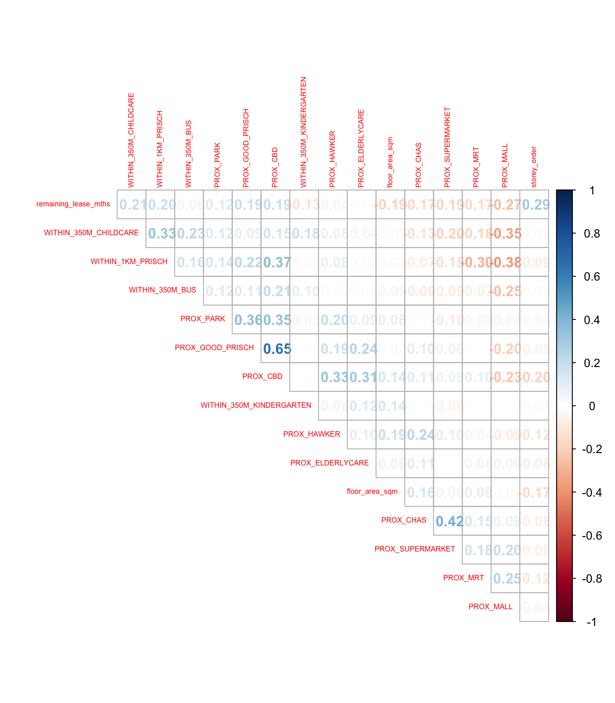

pacman::p_load(sf, spdep, GWmodel, SpatialML, tmap, rsample, Metrics, tidyverse)Hands-on Exercise 8: Geographically Weighted Predictive Models
1 Overview
Predictive modeling uses statistical learning or machine learning techniques to forecast outcomes. Typically, the event being predicted occurs in the future. However, a set of known outcomes and predictors (also referred to as variables) is used to calibrate the predictive models.
This exercise aims to build predictive models using geographical random forest. Along the way, the intended acquired skills are:
- Preparing training and test data sets using sampling methods
- Calibrating predictive models using both geospatial statistical learning and machine learning methods
- Comparing and selecting the best model for predicting the future outcome and,
- Predicting future outcomes using the best calibrated model
2 The Data
| Dataset Name | Description | Format |
|---|---|---|
| Master Plan 2014 Subzone Boundary | Geospatial data representing the boundaries of different areas in Singapore, specifically at the planning subzone level. | ESRI Shapefile |
| HDB Resale data | Aspatial data containing HDB resale transacted prices in Singapore from Jan 2017 onwards. | CSV |
| List of eldercare in Singapore | Geospatial data containing list of eldercare locations in Singapore. | geojson |
| List of hawker centres in Singapore | Geospatial data containing list of hawker centres locations in Singapore. | geojson |
| List of parks in Singapore | Geospatial data containing list of parks locations in Singapore. | geojson |
| List of supermarkets in Singapore | Geospatial data containing list of supermarkets locations in Singapore. | geojson |
| List of CHAS clinics in Singapore | Geospatial data containing list of CHAS clinics locations in Singapore. | geojson |
| List of kindergartens in Singapore | Geospatial data containing list of kindergartens locations in Singapore. | geojson |
| List of MRT/LRT stations in Singapore | Geospatial data containing list of MRT/LRT stations locations in Singapore. | ESRI Shapefile |
| List of bus stops in Singapore | Geospatial data containing list of eldercare in Singapore. | ESRI Shapefile |
| List of primary school in Singapore | Aspatial data containing list of primary schools in Singapore. | CSV |
| CBD coordinates | scraped from Google. | |
| List of shopping malls in Singapore | Aspatial data containing list of shopping malls in Singapore. | CSV |
| Good primary schools | Aspatial data containing list of primary schools that are ordered in ranking in terms of popularity. | CSV |
3 The Packages
We will use following packages in this exercise
We will use following packages in this exercise:
| Package | Description |
|---|---|
| sf | Provides functions to manage, process, and manipulate Simple Features, a formal geospatial data standard that specifies a storage and access model of spatial geometries such as points, lines, and polygons. |
| spdep | Provides a collection of functions to create spatial weights matrix objects from polygon ‘contiguities’, point patterns by distance, and tessellations. |
| tidyverse | A collection of R packages for data science tasks such as importing, tidying, wrangling, and visualizing data. |
| tmap | Provides functions for creating cartographic-quality static maps or interactive maps using the leaflet API. |
| GWmodel | A package for calibrating the geographically weighted family of models. |
| SpatialML | A package that implements a spatial extension of the random forest algorithm. |
| rsample | A package that provides functions to create different types of resamples and corresponding classes for their analysis. |
| Metrics | A packages for common machine learning metrics. |
To install and launch all R packages.
4 Data Preparation
4.1 Import the data
We already have processed data on above datasets in .rds format. Let’s load it using read_rds() function.
mdata <- read_rds("data/mdata.rds")
glimpse(mdata)Rows: 15,901
Columns: 18
$ resale_price <dbl> 330000, 360000, 370000, 375000, 380000, 38000…
$ floor_area_sqm <dbl> 92, 91, 92, 99, 92, 92, 92, 92, 93, 91, 91, 9…
$ storey_order <int> 1, 3, 1, 2, 2, 4, 3, 2, 4, 3, 3, 3, 4, 3, 2, …
$ remaining_lease_mths <dbl> 684, 738, 733, 700, 715, 732, 706, 745, 731, …
$ PROX_CBD <dbl> 8.824749, 9.841309, 9.560780, 9.609731, 8.351…
$ PROX_ELDERLYCARE <dbl> 0.2514065, 0.6318448, 1.0824168, 0.3473195, 0…
$ PROX_HAWKER <dbl> 0.44182653, 0.26972560, 0.25829513, 0.4364751…
$ PROX_MRT <dbl> 0.6885144, 1.0969096, 0.8862859, 1.4093169, 0…
$ PROX_PARK <dbl> 0.7450859, 0.4294870, 0.7800777, 0.1776163, 0…
$ PROX_GOOD_PRISCH <dbl> 1.2703931, 0.4045792, 2.0942375, 0.1375070, 1…
$ PROX_MALL <dbl> 0.5534331, 1.0677012, 0.9751113, 1.1752392, 1…
$ PROX_CHAS <dbl> 1.364596e-01, 2.569863e-01, 1.906189e-01, 2.9…
$ PROX_SUPERMARKET <dbl> 0.2708222, 0.3101889, 0.3187560, 0.4586748, 0…
$ WITHIN_350M_KINDERGARTEN <int> 1, 1, 1, 1, 1, 1, 1, 1, 1, 0, 1, 1, 1, 1, 1, …
$ WITHIN_350M_CHILDCARE <int> 6, 5, 2, 3, 3, 2, 3, 4, 3, 2, 4, 4, 4, 5, 2, …
$ WITHIN_350M_BUS <int> 8, 8, 8, 7, 6, 9, 6, 6, 5, 4, 10, 5, 6, 9, 8,…
$ WITHIN_1KM_PRISCH <int> 2, 2, 1, 2, 2, 1, 3, 2, 2, 2, 2, 2, 3, 2, 2, …
$ geometry <POINT [m]> POINT (29179.92 38822.08), POINT (28423…4.2 Data Sampling
The entire dataset is split into training and test sets, with 65% allocated to the training set and 35% to the test set, using the initial_split() function from rsample package.
set.seed(1234)
resale_split <- initial_split(mdata,
prop = 6.5/10,)
train_data <- training(resale_split)
test_data <- testing(resale_split)write_rds(train_data, "data/model/train_data.rds")
write_rds(test_data, "data/model/test_data.rds")5 Compute Correlation Matrix
Before loading the predictors into a predictive model, it is good practice to examine a correlation matrix to check for signs of multicollinearity.
mdata_nogeo <- mdata %>%
st_drop_geometry()
corrplot::corrplot(cor(mdata_nogeo[, 2:17]),
diag = FALSE,
order = "AOE",
tl.pos = "td",
tl.cex = 0.5,
method = "number",
type = "upper")
The correlation matrix above shows that all correlation values are below 0.8, indicating no signs of multicollinearity.
6 Non-Spatial Multiple Linear Regression
In this section, we will build a non-spatial multiple linear regression model. This statistical technique uses several explanatory variables to predict the outcome of a response variable. The goal is to model the relationship between the explanatory and response variables.
We will use the lm() function to construct the model.
price_mlr <- lm(resale_price ~ floor_area_sqm +
storey_order + remaining_lease_mths +
PROX_CBD + PROX_ELDERLYCARE + PROX_HAWKER +
PROX_MRT + PROX_PARK + PROX_MALL +
PROX_SUPERMARKET + WITHIN_350M_KINDERGARTEN +
WITHIN_350M_CHILDCARE + WITHIN_350M_BUS +
WITHIN_1KM_PRISCH,
data=train_data)
summary(price_mlr)
Call:
lm(formula = resale_price ~ floor_area_sqm + storey_order + remaining_lease_mths +
PROX_CBD + PROX_ELDERLYCARE + PROX_HAWKER + PROX_MRT + PROX_PARK +
PROX_MALL + PROX_SUPERMARKET + WITHIN_350M_KINDERGARTEN +
WITHIN_350M_CHILDCARE + WITHIN_350M_BUS + WITHIN_1KM_PRISCH,
data = train_data)
Residuals:
Min 1Q Median 3Q Max
-205193 -39120 -1930 36545 472355
Coefficients:
Estimate Std. Error t value Pr(>|t|)
(Intercept) 107601.073 10601.261 10.150 < 2e-16 ***
floor_area_sqm 2780.698 90.579 30.699 < 2e-16 ***
storey_order 14299.298 339.115 42.167 < 2e-16 ***
remaining_lease_mths 344.490 4.592 75.027 < 2e-16 ***
PROX_CBD -16930.196 201.254 -84.124 < 2e-16 ***
PROX_ELDERLYCARE -14441.025 994.867 -14.516 < 2e-16 ***
PROX_HAWKER -19265.648 1273.597 -15.127 < 2e-16 ***
PROX_MRT -32564.272 1744.232 -18.670 < 2e-16 ***
PROX_PARK -5712.625 1483.885 -3.850 0.000119 ***
PROX_MALL -14717.388 2007.818 -7.330 2.47e-13 ***
PROX_SUPERMARKET -26881.938 4189.624 -6.416 1.46e-10 ***
WITHIN_350M_KINDERGARTEN 8520.472 632.812 13.464 < 2e-16 ***
WITHIN_350M_CHILDCARE -4510.650 354.015 -12.741 < 2e-16 ***
WITHIN_350M_BUS 813.493 222.574 3.655 0.000259 ***
WITHIN_1KM_PRISCH -8010.834 491.512 -16.298 < 2e-16 ***
---
Signif. codes: 0 '***' 0.001 '**' 0.01 '*' 0.05 '.' 0.1 ' ' 1
Residual standard error: 61650 on 10320 degrees of freedom
Multiple R-squared: 0.7373, Adjusted R-squared: 0.737
F-statistic: 2069 on 14 and 10320 DF, p-value: < 2.2e-167 GWR Predictive Method
In this section, we will learn how to calibrate a model to predict HDB resale prices using the geographically weighted regression (GWR) method from the GWmodel package.
7.1 Convert sf data frame to SpatialPointDataFrame
First, we need to convert our sf data frame to a SpatialPointsDataFrame, as the functions in the GWmodel package require data in this format. We can perform this conversion using the as_Spatial() function from the sf package.
train_data_sp <- as_Spatial(train_data)
train_data_spclass : SpatialPointsDataFrame
features : 10335
extent : 11597.31, 42623.63, 28217.39, 48741.06 (xmin, xmax, ymin, ymax)
crs : +proj=tmerc +lat_0=1.36666666666667 +lon_0=103.833333333333 +k=1 +x_0=28001.642 +y_0=38744.572 +ellps=WGS84 +towgs84=0,0,0,0,0,0,0 +units=m +no_defs
variables : 17
names : resale_price, floor_area_sqm, storey_order, remaining_lease_mths, PROX_CBD, PROX_ELDERLYCARE, PROX_HAWKER, PROX_MRT, PROX_PARK, PROX_GOOD_PRISCH, PROX_MALL, PROX_CHAS, PROX_SUPERMARKET, WITHIN_350M_KINDERGARTEN, WITHIN_350M_CHILDCARE, ...
min values : 218000, 74, 1, 555, 0.999393538715878, 1.98943787433087e-08, 0.0333358643817954, 0.0220407324774434, 0.0441643212802781, 0.0652540365486641, 0, 6.20621206270077e-09, 1.21715176356525e-07, 0, 0, ...
max values : 1186888, 133, 17, 1164, 19.6500691667807, 3.30163731686804, 2.86763031236184, 2.13060636038504, 2.41313695915468, 10.6223726149914, 2.27100643784442, 0.808332738794272, 1.57131703651196, 7, 20, ... 7.2 Compute adaptive bandwidth
Next, the bw.gwr() function from the GWmodel package will be used to determine the optimal bandwidth for the GWR model.
bw_adaptive <- bw.gwr(resale_price ~ floor_area_sqm +
storey_order + remaining_lease_mths +
PROX_CBD + PROX_ELDERLYCARE + PROX_HAWKER +
PROX_MRT + PROX_PARK + PROX_MALL +
PROX_SUPERMARKET + WITHIN_350M_KINDERGARTEN +
WITHIN_350M_CHILDCARE + WITHIN_350M_BUS +
WITHIN_1KM_PRISCH,
data=train_data_sp,
approach="CV",
kernel="gaussian",
adaptive=TRUE,
longlat=FALSE)
write_rds(bw_adaptive, "data/aspatial/bw_adaptive.rds")In the adaptive approach, the bandwidth is not a fixed distance but is determined by the number of nearest neighbor points. This approach is particularly useful in areas where the density of data points varies.
The result from the
bw.gwr()function indicates that the optimal bandwidth for this dataset is 40 neighbor points. This means that when estimating the parameters for a given location, the model will consider the 40 nearest neighbors.
7.3 Construct adaptive bandwidth GWR model
Next, let us call the saved bandwidth by using the code chunk below.
bw_adaptive <- read_rds("data/aspatial/bw_adaptive.rds")
bw_adaptive[1] 40Now, we can proceed to calibrate the GWR-based hedonic pricing model using an adaptive bandwidth and a Gaussian kernel, as shown in the code chunk below.
gwr_adaptive <- gwr.basic(formula = resale_price ~
floor_area_sqm + storey_order +
remaining_lease_mths + PROX_CBD +
PROX_ELDERLYCARE + PROX_HAWKER +
PROX_MRT + PROX_PARK + PROX_MALL +
PROX_SUPERMARKET + WITHIN_350M_KINDERGARTEN +
WITHIN_350M_CHILDCARE + WITHIN_350M_BUS +
WITHIN_1KM_PRISCH,
data=train_data_sp,
bw=bw_adaptive,
kernel = 'gaussian',
adaptive=TRUE,
longlat = FALSE)
write_rds(gwr_adaptive, "data/aspatial/gwr_adaptive.rds")7.4 Retrieve GWR output object
The code chunk below will be used to retrieve the saved GWR model object.
gwr_adaptive <- read_rds("data/aspatial/gwr_adaptive.rds")
gwr_adaptive ***********************************************************************
* Package GWmodel *
***********************************************************************
Program starts at: 2024-10-16 23:08:34.710299
Call:
gwr.basic(formula = resale_price ~ floor_area_sqm + storey_order +
remaining_lease_mths + PROX_CBD + PROX_ELDERLYCARE + PROX_HAWKER +
PROX_MRT + PROX_PARK + PROX_MALL + PROX_SUPERMARKET + WITHIN_350M_KINDERGARTEN +
WITHIN_350M_CHILDCARE + WITHIN_350M_BUS + WITHIN_1KM_PRISCH,
data = train_data_sp, bw = bw_adaptive, kernel = "gaussian",
adaptive = TRUE, longlat = FALSE)
Dependent (y) variable: resale_price
Independent variables: floor_area_sqm storey_order remaining_lease_mths PROX_CBD PROX_ELDERLYCARE PROX_HAWKER PROX_MRT PROX_PARK PROX_MALL PROX_SUPERMARKET WITHIN_350M_KINDERGARTEN WITHIN_350M_CHILDCARE WITHIN_350M_BUS WITHIN_1KM_PRISCH
Number of data points: 10335
***********************************************************************
* Results of Global Regression *
***********************************************************************
Call:
lm(formula = formula, data = data)
Residuals:
Min 1Q Median 3Q Max
-205193 -39120 -1930 36545 472355
Coefficients:
Estimate Std. Error t value Pr(>|t|)
(Intercept) 107601.073 10601.261 10.150 < 2e-16 ***
floor_area_sqm 2780.698 90.579 30.699 < 2e-16 ***
storey_order 14299.298 339.115 42.167 < 2e-16 ***
remaining_lease_mths 344.490 4.592 75.027 < 2e-16 ***
PROX_CBD -16930.196 201.254 -84.124 < 2e-16 ***
PROX_ELDERLYCARE -14441.025 994.867 -14.516 < 2e-16 ***
PROX_HAWKER -19265.648 1273.597 -15.127 < 2e-16 ***
PROX_MRT -32564.272 1744.232 -18.670 < 2e-16 ***
PROX_PARK -5712.625 1483.885 -3.850 0.000119 ***
PROX_MALL -14717.388 2007.818 -7.330 2.47e-13 ***
PROX_SUPERMARKET -26881.938 4189.624 -6.416 1.46e-10 ***
WITHIN_350M_KINDERGARTEN 8520.472 632.812 13.464 < 2e-16 ***
WITHIN_350M_CHILDCARE -4510.650 354.015 -12.741 < 2e-16 ***
WITHIN_350M_BUS 813.493 222.574 3.655 0.000259 ***
WITHIN_1KM_PRISCH -8010.834 491.512 -16.298 < 2e-16 ***
---Significance stars
Signif. codes: 0 '***' 0.001 '**' 0.01 '*' 0.05 '.' 0.1 ' ' 1
Residual standard error: 61650 on 10320 degrees of freedom
Multiple R-squared: 0.7373
Adjusted R-squared: 0.737
F-statistic: 2069 on 14 and 10320 DF, p-value: < 2.2e-16
***Extra Diagnostic information
Residual sum of squares: 3.922202e+13
Sigma(hat): 61610.08
AIC: 257320.2
AICc: 257320.3
BIC: 247249
***********************************************************************
* Results of Geographically Weighted Regression *
***********************************************************************
*********************Model calibration information*********************
Kernel function: gaussian
Adaptive bandwidth: 40 (number of nearest neighbours)
Regression points: the same locations as observations are used.
Distance metric: Euclidean distance metric is used.
****************Summary of GWR coefficient estimates:******************
Min. 1st Qu. Median 3rd Qu.
Intercept -3.2594e+08 -4.7727e+05 -8.3004e+03 5.5025e+05
floor_area_sqm -2.8714e+04 1.4475e+03 2.3011e+03 3.3900e+03
storey_order 3.3186e+03 8.5899e+03 1.0826e+04 1.3397e+04
remaining_lease_mths -1.4431e+03 2.6063e+02 3.9048e+02 5.2865e+02
PROX_CBD -1.0837e+07 -5.7697e+04 -1.3787e+04 2.6552e+04
PROX_ELDERLYCARE -3.2291e+07 -4.0643e+04 1.0562e+04 6.1054e+04
PROX_HAWKER -2.3985e+08 -5.1365e+04 3.0026e+03 6.4287e+04
PROX_MRT -1.1660e+07 -1.0488e+05 -4.9373e+04 5.1037e+03
PROX_PARK -6.5961e+06 -4.8671e+04 -8.8128e+02 5.3498e+04
PROX_MALL -1.8112e+07 -7.4238e+04 -1.3982e+04 4.9779e+04
PROX_SUPERMARKET -4.5761e+06 -6.3461e+04 -1.7429e+04 3.5616e+04
WITHIN_350M_KINDERGARTEN -4.1881e+05 -6.0040e+03 9.0209e+01 4.7127e+03
WITHIN_350M_CHILDCARE -1.0273e+05 -2.2375e+03 2.6668e+02 2.6388e+03
WITHIN_350M_BUS -1.1757e+05 -1.4719e+03 1.1626e+02 1.7584e+03
WITHIN_1KM_PRISCH -6.6465e+05 -5.5959e+03 2.6916e+02 5.7500e+03
Max.
Intercept 1.6493e+08
floor_area_sqm 5.0907e+04
storey_order 2.9537e+04
remaining_lease_mths 1.8119e+03
PROX_CBD 2.2489e+07
PROX_ELDERLYCARE 8.2444e+07
PROX_HAWKER 5.9654e+06
PROX_MRT 2.0189e+08
PROX_PARK 1.5224e+07
PROX_MALL 1.0443e+07
PROX_SUPERMARKET 3.8330e+06
WITHIN_350M_KINDERGARTEN 6.6799e+05
WITHIN_350M_CHILDCARE 1.0802e+05
WITHIN_350M_BUS 3.7313e+04
WITHIN_1KM_PRISCH 5.0262e+05
************************Diagnostic information*************************
Number of data points: 10335
Effective number of parameters (2trace(S) - trace(S'S)): 1730.101
Effective degrees of freedom (n-2trace(S) + trace(S'S)): 8604.899
AICc (GWR book, Fotheringham, et al. 2002, p. 61, eq 2.33): 238871.8
AIC (GWR book, Fotheringham, et al. 2002,GWR p. 96, eq. 4.22): 237036.9
BIC (GWR book, Fotheringham, et al. 2002,GWR p. 61, eq. 2.34): 238209
Residual sum of squares: 4.829177e+12
R-square value: 0.9676571
Adjusted R-square value: 0.9611535
***********************************************************************
Program stops at: 2024-10-16 23:09:34.919185 7.5 Convert test data from sf data frame to SpatialPointDataFrame
We need to convert our test data from an sf data frame to a SpatialPointsDataFrame, as the functions in the GWmodel package require data in this format. We will use the as_Spatial() function from the sf package to perform this conversion.
test_data_sp <- test_data %>%
as_Spatial()
test_data_spclass : SpatialPointsDataFrame
features : 5566
extent : 11597.31, 42623.63, 28287.8, 48669.59 (xmin, xmax, ymin, ymax)
crs : +proj=tmerc +lat_0=1.36666666666667 +lon_0=103.833333333333 +k=1 +x_0=28001.642 +y_0=38744.572 +ellps=WGS84 +towgs84=0,0,0,0,0,0,0 +units=m +no_defs
variables : 17
names : resale_price, floor_area_sqm, storey_order, remaining_lease_mths, PROX_CBD, PROX_ELDERLYCARE, PROX_HAWKER, PROX_MRT, PROX_PARK, PROX_GOOD_PRISCH, PROX_MALL, PROX_CHAS, PROX_SUPERMARKET, WITHIN_350M_KINDERGARTEN, WITHIN_350M_CHILDCARE, ...
min values : 230888, 74, 1, 546, 1.00583660772922, 3.34897933104965e-07, 0.0474019664161957, 0.0414043955932523, 0.0502664084494264, 0.0907500295577619, 0, 4.55547870890763e-09, 1.21715176356525e-07, 0, 0, ...
max values : 1050000, 138, 14, 1151, 19.632402730488, 3.30163731686804, 2.83106651960209, 2.13060636038504, 2.41313695915468, 10.6169590126272, 2.26056404492346, 0.79249074802552, 1.53786629004208, 7, 16, ... 7.6 Compute adaptive bandwidth for test data
Next, similar to the process used for the training data, we will use the bw.gwr() function from the GWmodel package to determine the optimal bandwidth for the GWR model on the test data.
gwr_bw_test_adaptive <- bw.gwr(resale_price ~ floor_area_sqm +
storey_order + remaining_lease_mths +
PROX_CBD + PROX_ELDERLYCARE + PROX_HAWKER +
PROX_MRT + PROX_PARK + PROX_MALL +
PROX_SUPERMARKET + WITHIN_350M_KINDERGARTEN +
WITHIN_350M_CHILDCARE + WITHIN_350M_BUS +
WITHIN_1KM_PRISCH,
data=test_data_sp,
approach="CV",
kernel="gaussian",
adaptive=TRUE,
longlat=FALSE)
write_rds(gwr_bw_test_adaptive, "data/aspatial/gwr_bw_test_adaptive.rds")7.7 Compute predicted values of test data
Finally, we use the gwr.predict() function from the GWmodel package to compute the predicted values for the test data based on our GWR model.
gwr_pred <- gwr.predict(formula = resale_price ~
floor_area_sqm + storey_order +
remaining_lease_mths + PROX_CBD +
PROX_ELDERLYCARE + PROX_HAWKER +
PROX_MRT + PROX_PARK + PROX_MALL +
PROX_SUPERMARKET + WITHIN_350M_KINDERGARTEN +
WITHIN_350M_CHILDCARE + WITHIN_350M_BUS +
WITHIN_1KM_PRISCH,
data=train_data_sp,
predictdata = test_data_sp,
bw=40,
kernel = 'gaussian',
adaptive=TRUE,
longlat = FALSE)8 Preparing coordinates data
8.1 Extracting coordinates data
The code chunk below extract the x, y coordinates of the full, training and test data sets using st_coordinates() function from the sf package.
coords <- st_coordinates(mdata)
coords_train <- st_coordinates(train_data)
coords_test <- st_coordinates(test_data)Save the output into rds for future use.
coords_train <- write_rds(coords_train, "data/geospatial/coords_train.rds" )
coords_test <- write_rds(coords_test, "data/geospatial/coords_test.rds" )8.2 Dropping geometry field
Next, we drop the geometry column from the sf data frame, as it is not needed for our upcoming analysis. We will use the st_drop_geometry() function from the sf package to perform this operation.
train_data <- train_data %>%
st_drop_geometry()9 Calibrating Random Forest Model
In this section, we will learn how to calibrate a model to predict HDB resale prices using the random forest function from the ranger package. After fitting the model, we save it as an RDS file using the write_rds() function.
set.seed(1234)
rf <- ranger(resale_price ~ floor_area_sqm + storey_order +
remaining_lease_mths + PROX_CBD + PROX_ELDERLYCARE +
PROX_HAWKER + PROX_MRT + PROX_PARK + PROX_MALL +
PROX_SUPERMARKET + WITHIN_350M_KINDERGARTEN +
WITHIN_350M_CHILDCARE + WITHIN_350M_BUS +
WITHIN_1KM_PRISCH,
data=train_data)
write_rds(rf, "data/model/rf.rds")rfRanger result
Call:
ranger(resale_price ~ floor_area_sqm + storey_order + remaining_lease_mths + PROX_CBD + PROX_ELDERLYCARE + PROX_HAWKER + PROX_MRT + PROX_PARK + PROX_MALL + PROX_SUPERMARKET + WITHIN_350M_KINDERGARTEN + WITHIN_350M_CHILDCARE + WITHIN_350M_BUS + WITHIN_1KM_PRISCH, data = train_data)
Type: Regression
Number of trees: 500
Sample size: 10335
Number of independent variables: 14
Mtry: 3
Target node size: 5
Variable importance mode: none
Splitrule: variance
OOB prediction error (MSE): 731404460
R squared (OOB): 0.9493789 10 Calibrating Geographical Random Forest Model
In this section, we will learn how to calibrate a model to predict HDB resale price using the grf() function of SpatialML package.
10.1 Calibrating using training data
Let’s calibrate a geographic random forest model then save the model.
set.seed(1234)
gwRF_adaptive <- grf(formula = resale_price ~ floor_area_sqm + storey_order +
remaining_lease_mths + PROX_CBD + PROX_ELDERLYCARE +
PROX_HAWKER + PROX_MRT + PROX_PARK + PROX_MALL +
PROX_SUPERMARKET + WITHIN_350M_KINDERGARTEN +
WITHIN_350M_CHILDCARE + WITHIN_350M_BUS +
WITHIN_1KM_PRISCH,
dframe=train_data,
bw=55,
kernel="adaptive",
coords=coords_train)
write_rds(gwRF_adaptive, "data/model/gwRF_adaptive.rds")10.2 Predicting using test data
10.2.1 Preparing test data
First, combine the test data with the corresponding coordinates. Since none of the rows in our datasets were sorted, using cbind() is sufficient. The st_drop_geometry() function is used to remove the geometry column.
test_data <- cbind(test_data, coords_test) %>%
st_drop_geometry()10.2.2 Predicting with test data
Next, the predict.grf() function from the SpatialML package will be used to predict the resale value using the test data and the previously calibrated gwRF_adaptive model.
GRF_pred <- predict.grf(gwRF_adaptive,
test_data,
x.var.name="X",
y.var.name="Y",
local.w=1,
global.w=0)
write_rds(GRF_pred, "data/model/GRF_pred.rds")10.2.3 Converting prediction output into a data frame
The output of predict.grf() is a vector of predicted values. It is advisable to convert this into a data frame for easier visualization and analysis.
GRF_pred <- read_rds("data/model/GRF_pred.rds")
GRF_pred_df <- as.data.frame(GRF_pred)Then, we’ll use cbind() to append the predicted values to the test data.
test_data_p <- cbind(test_data, GRF_pred_df)
write_rds(test_data_p, "data/model/test_data_p.rds")10.3 Calculate Root Mean Square Error (RMSE)
The root mean square error (RMSE) allows us to measure how far the predicted values are from the observed values in a regression analysis. In the code chunk below, the rmse() function from the Metrics package is used to compute the RMSE.
rmse(test_data_p$resale_price,
test_data_p$GRF_pred)[1] 27302.910.4 Visualize Predicted Value
A scatterplot can be used to visualize the actual resale prices versus the predicted resale prices, as shown in the code chunk below.
ggplot(data = test_data_p,
aes(x = GRF_pred,
y = resale_price)) +
geom_point() +
geom_abline(slope = 1, intercept = 0, color = "red", linetype = "solid")11 Reference
Kam, T. S. Geographically Weighted Predictive Models. R for Geospatial Data Science and Analytics. https://r4gdsa.netlify.app/chap14.html